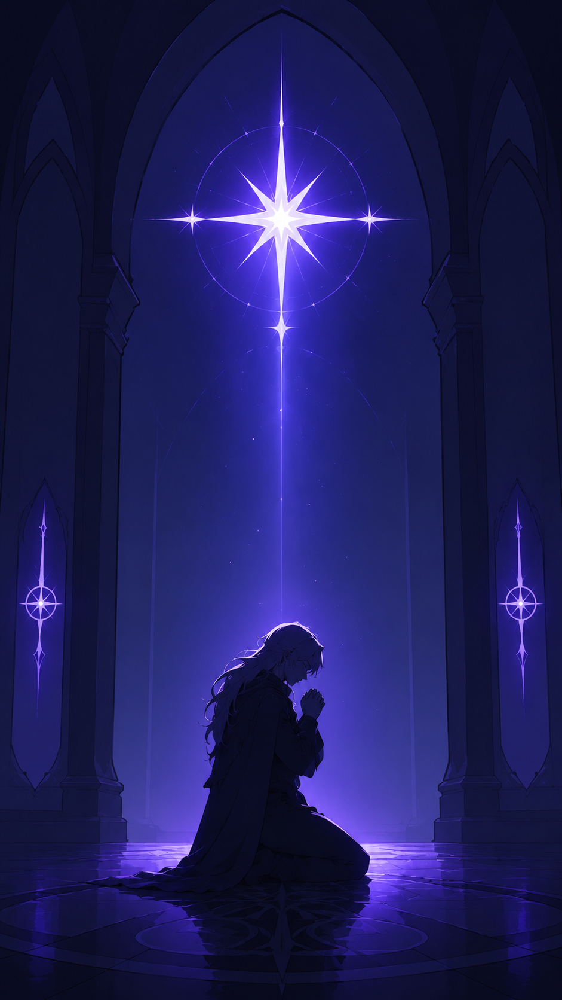

Guardians of Seneca
A Victorian steampunk fantasy — four relics, four territories, one prophecy

You are the new monarch of Seneca — but the crown is probably the least of your problems. The four Guardians, each tasked with ruling one of the major territories and wielding a magical relic capable of sealing the terrible rifts that let monsters spill into the land, believe you are the Auspice: prophesied to unite the relics and close the rifts for good. You've got the crescent moon birthmark, after all.
Never mind that your mother, the late queen, died of the Crimson Plague when you were very small, or that your father, the recently deceased King Marcus, lied about where you were for the last seven years "for your own protection" (sure). At least you've got the Guardians. They've known you since you were a child, and they've always had your best interests at heart… right?
▶ Setting Notes
I originally made these a while ago, but only released Fenris. The others were still in their draft form for ages. These were the first cards I tried making expression sprites for; the resulting sprites are okaaaay but I may redo them one day to match the avatar style better *tired groan* it's so much work....so probably not any time soon.

Lorebook
Characters
Click a character to see download options.


{kind=link}
{kind=link}
{kind=link}
{kind=link}
{kind=link}
{kind=link}